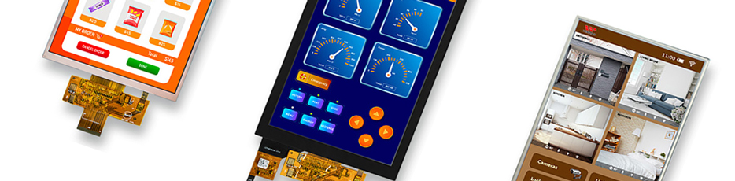
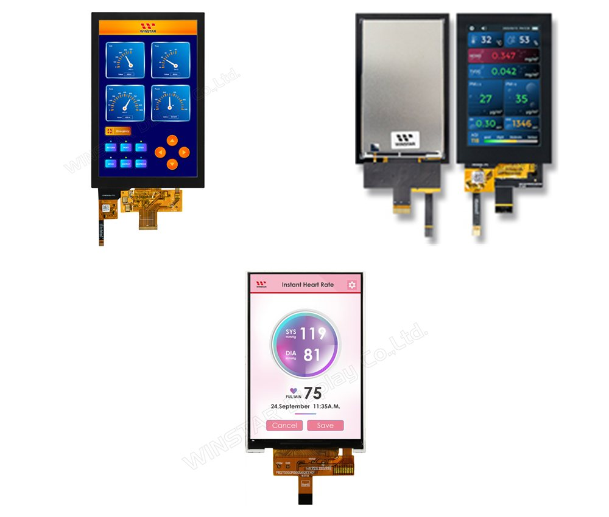

Portrait TFT LCD modules from 0.96" to 8.0", built to be used tall. Find out why a native portrait panel beats a rotated landscape one, and how to choose a panel type, interface and touch option.

A portrait TFT is a colour TFT LCD designed to be used tall rather than wide. Its native resolution has more rows than columns, such as 240x320 or 800x1280, it draws the picture from the top of the portrait image to the bottom, and its connector sits at the bottom edge. That makes it a natural fit for handheld devices, vending machines, kiosks and wall-mounted panels.
As the authorised distributor for Winstar Display Corporation we offer portrait TFT modules from the 0.96" 80x160 up to the 8.0" 800x1280, mostly with IPS panels for wide viewing angles, with SPI, MCU and MIPI DSI interfaces and optional capacitive touch.
Native portrait, no rotation needed
Sizes from 0.96" to 8.0"
IPS wide viewing angles
SPI, MCU and MIPI DSI
PCAP touch, up to 10 points
Up to 1000 cd/m² brightness
A TFT panel writes its picture one row at a time, along its native rows. Turn a landscape panel on its side and those rows now run up and down, so the image must be rotated in software or by the display controller before it is sent. That adds processor load, and fast-moving content can tear because the panel refreshes across the picture rather than down it.
A native portrait panel is built tall from the start. It refreshes from the top of the image to the bottom, the image goes straight from memory to the screen, and the flexible connector sits neatly at the base. With IPS panels on most models, the viewing angle is the same from every side.
Simplified illustration: grey lines show the direction of the panel's native rows
Why designers choose a native portrait display for tall products
Lists, menus and readouts fit naturally on a tall screen, the way people hold handheld devices.
The image goes straight from memory to the screen, with no rotation step for the processor.
Refreshing from top to bottom of the image keeps scrolling and animation free of diagonal tearing.
IPS panels on most models give 80° viewing in every direction, with stable colour.
The flexible connector leaves from the bottom edge, keeping the product narrow.
Projected capacitive touch from single-point up to 10-point, with optical bonding on selected models.
Most of the range uses IPS panels, with 80° viewing in every direction and stable colour, ideal for screens viewed from any angle.
The 1.8" uses a VA panel with a very high 1500:1 contrast, for deep blacks and crisp graphics.
| Panel | Models | Strength |
|---|---|---|
| IPS | 0.96", 1.54", 2.0", 2.4", 2.8", 3.5", 3.97", 5.0", 7.0", 8.0" | Wide viewing angles, stable colour |
| VA | 1.8" | High contrast, 1500:1 |
Small portrait displays use SPI, needing only a few connections to a microcontroller, and have their own frame memory so only changes need sending. Larger, higher resolution displays use MIPI DSI, a fast serial link for processors with a MIPI display output.
Our engineers can help match a display and interface to your design and arrange samples.
| Interface | Connection | Used On |
|---|---|---|
| SPI | Serial clock and data | 0.96", 1.54", 1.8", 2.0", 2.4", 2.8" |
| MCU parallel | 8-bit or 16-bit bus | 2.0", 2.4", 2.8" |
| MIPI DSI, 1 lane | High-speed serial | 3.5" |
| MIPI DSI, 2 lanes | High-speed serial | 3.97", 7.0" |
| MIPI DSI, 4 lanes | High-speed serial | 5.0", 8.0" |
Compare our portrait TFT modules by size, resolution, driver IC, interface, brightness, touch and outline
| Model | Size | Resolution | Driver IC | Interface | Brightness | Touch | Outline (mm) |
|---|---|---|---|---|---|---|---|
| WF0096ATYAA3DNF10 | 0.96" | 80x160 | ST7735S | SPI | 400 cd/m² | PCAP, optical bonding | 18.7 x 31.9 x 2.64 |
| WF0154ASAAA4DSN0 | 1.54" | 240x240 | ST7789T3 | SPI | 850 cd/m² | None | 31.52 x 33.72 x 1.94 |
| WFN0180A2S0XASNC000 | 1.8" | 128x160 | NV3023B | SPI | 850 cd/m² | PCAP | 36.5 x 47.0 x 4.73 |
| WF0200BSYAJDNN0 | 2.0" | 240x320 | ST7789VI | MCU, SPI | 950 cd/m² | None | 38.8 x 52.3 x 2.15 |
| WF24LSYAJDNG0 | 2.4" | 240x320 | ILI9341V | MCU, SPI | 800 cd/m² | PCAP | 42.72 x 60.26 x 4.5 |
| WF28JSYAJDNN0 | 2.8" | 240x320 | ILI9341V | MCU, SPI | 1000 cd/m² | None | 50.5 x 69.7 x 4.55 |
| WF35UTYAIMNN0 | 3.5" | 320x480 | ILI9488 | MIPI, 1 lane | 600 cd/m² | None | 54.5 x 83.0 x 2.46 |
| WF40CTYAQMNG10 | 3.97" | 480x800 | ST7701S | MIPI, 2 lanes | 400 cd/m² min. | 5-point PCAP, optical bonding | 67.14 x 106.85 x 3.8 |
| WF50DTYA3MNNB | 5.0" | 720x1280 | ILI9881C | MIPI, 4 lanes | 600 cd/m² | None | 68.4 x 122.7 x 4.6 |
| WF70D4SYAUMNG10 | 7.0" | 800x1280 | ILI9881C | MIPI, 2 lanes | 850 cd/m² | 10-point PCAP, optical bonding | 131.63 x 188.17 x 8.05 |
| WF80GSYAUMNG0 | 8.0" | 800x1280 | ILI9881C | MIPI, 4 lanes | 900 cd/m² | 5-point PCAP | 123.74 x 192.08 x 7.95 |
Figures from Winstar's specifications. See the datasheet or contact us for details. View Portrait TFT Displays →
Portrait TFTs suit products that are taller than they are wide
Scanners, meters and portable terminals held in one hand.
Tall selection and payment screens on vending and dispensing units.
Self-service kiosks, payment terminals and retail displays.
Patient monitors and portable medical devices.
Smart home, access and building control panels mounted upright.
Narrow operator panels and industrial tablets.
Our engineering team can help specify or develop a custom solution for your exact requirements.
Talk to Our Engineers